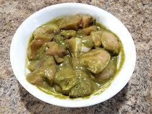

Andhra Chilly Chicken

Description
This is a fantastic recipe.
It is going to be spicy. So, eat at your own risk :)
Ingredients
- 1 kg chicken
- 50 grams green chillies
- 1 tbsp soy sauce
- 2 tbsp ginger garlic paste
- 2 tbsp corn flour
- salt to taste
Steps
- Grind the chillies to make a coarse paste and add it to the chicken
- Add salt, soy sauce and ginger garlic paste to the chicken. Mix together
- Let it cook for 3 to 4 whistles
- Once the cooker cools down, cook in medium heat until majority of the water evaporates
- Add cornflour-mixed-water to it, mix well and cook in high flame for 2 minutes
- Serve with rice or rotis